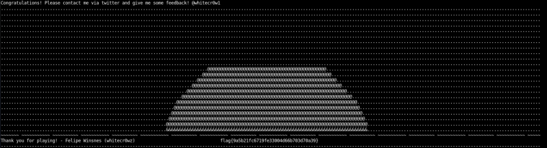

5.2 Root shell (2nd flag)
On the Victim Machine change user to root.
$
su
root
Output:
root@nightfall:/home/nightfall#
Run the following commands:
$
cd
/
root
$
ls
$
cat
root_super_secret_flag.txt

It's done.
Index